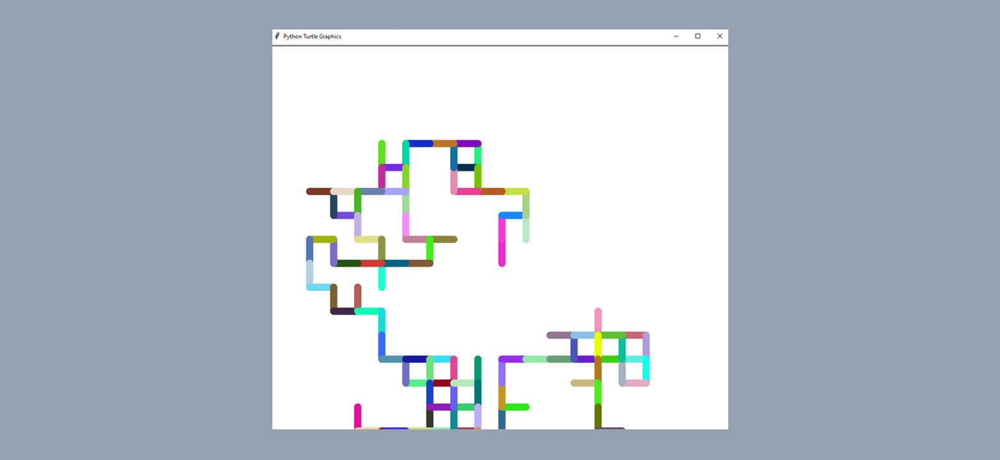

Hirst Painting
This Python application uses the turtle module to create a digital painting inspired by Damien Hirst's style. The script initializes a turtle named tim, sets the color mode to RGB, and generates random colors for the pen. The random_walk function directs tim to move in random directions (0, 90, -90, 180 degrees) for 500 steps, changing colors with each step and creating a vibrant, unpredictable pattern. To use the app, run the script in a Python environment supporting turtle, and watch as tim produces a colorful, abstract artwork. This engaging tool combines programming and art, making learning about randomness and graphics fun.